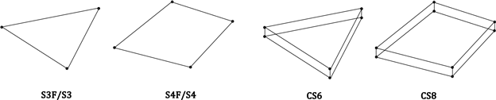
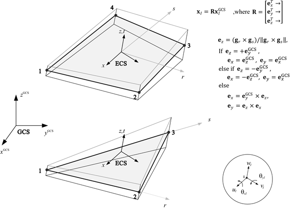
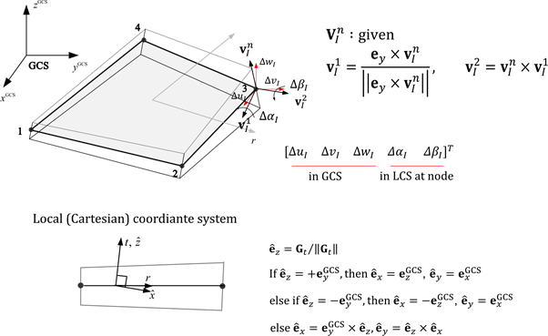
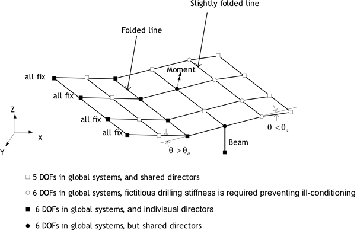
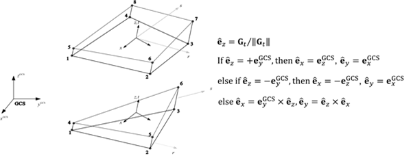

Shell
A shell structure can be defined as a structure with a thin thickness relative to its span. From the perspective of stress conditions, the stress in the thickness direction is zero, and shell elements must be used for the modeling of shell structures. Shell finite elements are broadly categorized into conventional shell elements and continuum shell elements (see Figure 7.1). Generally, a conventional shell element refers to a shell element that is discretized based on a reference plane, which is usually set as the mid-surface. Nodes on the reference plane have three translational degrees of freedom and two or three rotational degrees of freedom. In contrast, continuum shell elements have translational degrees of freedom at the nodes, similar to conventional continuum elements, and can be modeled similarly to continuum elements, making them convenient to use in certain situations.

Fig. 4.5-1. Shell elements
■ Element Types
- S3F: 3-node triangular flat shell
- S4F: 4-node quadrilateral flat shell
- S3: 3-node triangular general shell
- S4: 4-node quadrilateral general shell
- CS6: 6-node triangular continuum shell
- CS8: 8-node quadrilateral continuum shell
■ Element Cross-Section
- Shell: Defines a uniform cross-section.
■ Element-Specific Properties (Distribution)
- NodalThickness: Specifies the thickness at each node for variable thickness elements.
Conventional shell elements are divided into flat shell elements (S3F, S4F) and general shell elements (S3, S4). Flat shells are assumed to be flat. Therefore, the thickness direction vector is constant, and the ECS of the element is defined. During the formulation process, the stress-strain relationship is used as the constitutive equation. General shell elements, on the other hand, can model curved surfaces by defining the thickness direction vector (director vector) at the nodes, and the stress-strain relationship is used as the constitutive equation. Since the formulation is based on the reduction of continuum elements to a reference plane, it is also called a degenerated shell. As general shell elements are curved, different local coordinate systems (LCS) are defined at the material points. When applied to flat conditions, the results are the same as those of flat shells.
All conventional shell elements apply the AS (Assumed Strain) method using the MITC technique to eliminate shear locking. For integration in the thickness direction, three methods—Lobatto, Legendre, and Newton-Cotes—are supported. By default, Lobatto uses 3 points for linear materials and 4 points for nonlinear materials; Legendre uses 2 points for linear materials and 3 points for nonlinear materials; and Newton-Cotes uses 3 points for linear materials and 5 points for nonlinear materials.

Fig. 4.5-2. Element Coordinate System for S4F and S3F

Fig. 4.5-3. Local Coordinate System for S4 and S3
Conventional shell elements are defined with 5 degrees of freedom per node. However, if adjacent elements have 3 rotational degrees of freedom, if boundary conditions or load conditions are applied to the rotational degrees of freedom, or if the normal vector of the node differs from that of the adjacent shell elements, it automatically changes to 6 degrees of freedom.

Fig. 4.5-4. Handling 5/6 DOF in S3, S4, S3F, and S4F
Solid shell elements are shell elements that can be modeled in the same manner as regular solid elements. They have 3 degrees of freedom per node. Various locking issues are eliminated by applying the AS (Assumed Strain) method as well as the EAS (Enhanced Assumed Strain) method. The material model uses a 3D material model. Therefore, an arbitrary or desired orthogonal coordinate system can be chosen as the local coordinate system. However, for consistency with general shell elements, the thickness direction is set as the z-direction of the local coordinate system. Integration in the thickness direction is the same as for general shell elements. Three methods—Lobatto, Legendre, and Newton-Cotes—are supported. By default, Lobatto uses 3 points for linear materials and 4 points for nonlinear materials; Legendre uses 2 points for linear materials and 3 points for nonlinear materials; and Newton-Cotes uses 3 points for linear materials and 5 points for nonlinear materials.

Fig. 4.5-5. Local Coordinate System for SC8 and SC6
Shell elements can output results at the 4 or 3 integration points within the plane, as shown in the figure. S3F and S4F provide section forces and strains at the mid-surface, while S3, S4, CS6, and CS8 output stresses and strains at the top and bottom integration points in the thickness direction. Section forces are calculated based on the mid-surface using integration.

Fig. 4.5-6. Integration Points for 4-node and 3-node Shell Elements

Fig. 4.5-7. Definition of Section Forces in Shell Elements
Example
*Material,Type=IsoElasticity,Name=mat
30E9, 0.18, 0, 2000. # E, nu, alpha, density
*Section, Type=Shell,Name=sec
mat, 0.01 # h
*Element, Type=S4F
1, 1, 2, 3, 4, S=sec, H=-1, 0.02, -1, 0.02 # Apply H=0.02 for the 2nd and 3rd nodes, and H=0.01 (default) for the 1st and 4th nodes.
*Element, TYPE=S3F
Defines a 3-node flat shell element.
*Element, Type=S3F, ELSet=elset
id,n1,n2,n3 {, S=section}
...
Specifications
- No. of nodes: 3
- Fields: SSF=[Nx Ny Nxy Mx My Mxy Vx Vy], SSE=[Ex Ey Gxy Kx Ky Kxy Gxz Gyz], SST=[T0 Tz] at each Gauss point for the midsurface. Material model at each Gauss point for the top and bottom surface in shell section, or for the respective vertical center in composite shell section.
- Compatible section: ShellSection, CompositeShellSection
- Active DOFs: X, Y, Z, SRX, SRY
*Element, TYPE=S4F
Defines a 4-node flat shell element.
*Element, Type=S4F, ELSet=elset
id,n1,n2,n3,n4 {, S=section}
...
Specifications
- No. of nodes: 4
- Fields: SSF=[Nx Ny Nxy Mx My Mxy Vx Vy], SSE=[Ex Ey Gxy Kx Ky Kxy Gxz Gyz], SST=[T0 Tz] at each Gauss points for midsurface. Material model at each Gauss points for top and bottom surface in shell section, or for repective vertical center in composite shell section.
- Compatible section: ShellSection, CompositeShellSection
- Active DOFs: X, Y, Z, SRX, SRY
*Element, TYPE=S3
Defines a 3-node conventional shell element.
*Element, Type=S3, ELSet=elset
id,n1,n2,n3 {, S=section}
...
Specifications
- No. of nodes: 3
- Fields: SSF=[Nx Ny Nxy Mx My Mxy Vx Vy], SSE=[Ex Ey Gxy Kx Ky Kxy Gxz Gyz], SST=[T0 Tz] at each Gauss points for midsurface. Material model at each Gauss points for top and bottom surface in shell section.
- Compatible section: ShellSection
- Active DOFs: X, Y, Z, SRX, SRY
*Element, TYPE=S4
Defines a 4-node conventional shell element.
*Element, Type=S4, ELSet=elset
id,n1,n2,n3,n4 {, S=section}
...
Specifications
- No. of nodes: 4
- Fields: SSF=[Nx Ny Nxy Mx My Mxy Vx Vy], SSE=[Ex Ey Gxy Kx Ky Kxy Gxz Gyz], SST=[T0 Tz] at each Gauss points for midsurface. Material model at each Gauss points for top and bottom surface in shell section.
- Compatible section: ShellSection
- Active DOFs: X, Y, Z, SRX, SRY
*Element, TYPE=CS6
Defines a 6-node solid shell element.
*Element, Type=CS6, ELSet=elset
id,n1,n2,n3,n4,n5,n6 {, S=section }
...
Specifications
- No. of nodes: 6
- Fields: SSF=[Nx Ny Nxy Mx My Mxy Vx Vy], SSE=[Ex Ey Gxy Kx Ky Kxy Gxz Gyz], SST=[T0 Tz] at each Gauss points for midsurface. Material model at each Gauss points for top and bottom surface in shell section.
- Compatible section: ShellSection
- Active DOFs: X, Y, Z
*Element, TYPE=CS8
Defines a 8-node solid shell element.
*Element, Type=CS8, ELSet=elset
id,n1,n2,n3,n4,n5,n6,n7,n8 {, S=section }
...
Specifications
- No. of nodes: 8
- Fields: SSF=[Nx Ny Nxy Mx My Mxy Vx Vy], SSE=[Ex Ey Gxy Kx Ky Kxy Gxz Gyz], SST=[T0 Tz] at each Gauss points for midsurface. Material model at each Gauss points for top and bottom surface in shell section.
- Compatible section: ShellSection
- Active DOFs: X, Y, Z
*Section, TYPE=Shell
Defines the cross-section for a shell element.
*Section, Type=Shell, Name=name, Offset=offset, Mass=Consistent|Lumped
material, h
...
integration, ngauss
Keyword line
- Name=name: Section name (required). Section names must be unique.
- Offset=offset: Distance from the shell's midsurface to the reference surface defined by the node. Expressed as a ratio of the thickness. A value of +0.5 places the reference surface at the top surface, while -0.5 places it at the bottom surface. All physical quantities of the shell element are defined at the reference surface. Not used for ContinuumShell.
- Mass=Consistent|Lumped: Consistent or Lumped, which specifies whether the mass is consistent or lumped, respectively. (Optional, default is Consistent)
First dataline and subsequent lines
- material: Material (required).
- h: Thickness (required). For a homogeneous section (single layer), it is ignored if nodal thickness is specified. For a composite section (multiple layers), if nodal thickness is specified, the thickness of each layer is scaled such that the total thickness matches the nodal thickness.
Last dataline (optional)
- integration: Integration method in the thickness direction. One of Lobatto, Legendre, or NewtonCotes. Default is Lobatto.
- ngauss: Number of integration points in the thickness direction for each layer. If not specified, the default is 3 for linear materials and 4 for nonlinear materials when using Lobatto. For Gauss integration, the default is 2 for linear materials and 3 for nonlinear materials. For Newton-Cotes, the default is 3 for linear materials and 5 for nonlinear materials.
In shell elements, responses such as stress and strain at material points are defined at the center point if ngauss is 1, and at the top and bottom points if ngauss is 2. The current version of Hyfeast supports the application of multiple layered sections only for S3F and S4F.
Example
*MATERIAL, TYPE=IsoElasticity Name=matrDeckConc
25.000e9, 0.18, 0, 2500.
*MATERIAL, TYPE=OrthoElasticity Name=matrDeckTF
21.210e9, 14.616e9, 15.616e9, 0.182, 0.182, 0.182, 11.115e9, 11.115e9, 6.669e9, 3883.
*MATERIAL, TYPE=OrthoElasticity, Name=matrDeckWeb
16.210e9, 12.616e9, 12.616e9, 0.182, 0.182, 0.182, 11.115e9, 11.115e9, 6.669e9, 3883.
*MATERIAL, TYPE=OrthoElasticity Name=matrDeckBF
21.210e9, 14.616e9, 15.616e9, 0.182, 0.182, 0.182, 11.115e9, 11.115e9, 6.669e9, 3883.
*SECTION, TYPE=Shell, Name=homogeneousSection
matrDeckBF, 0.4
*SECTION, TYPE=Shell, Name=secDeck
matrDeckBF, 0.01
matrDeckWeb, 0.08
matrDeckTF, 0.01
matrDeckConc, 0.12